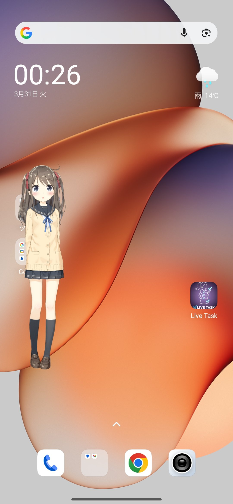
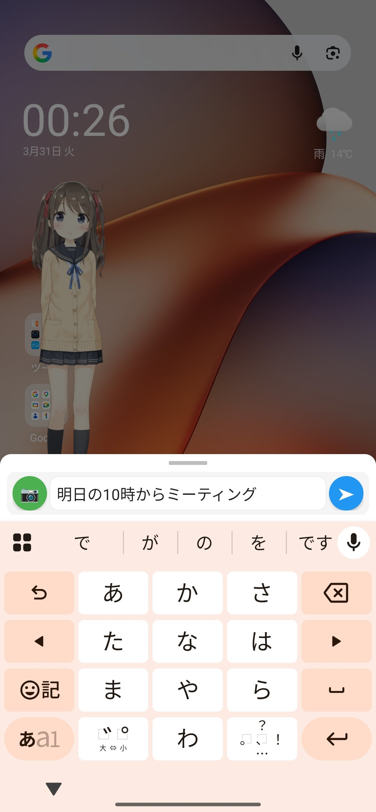
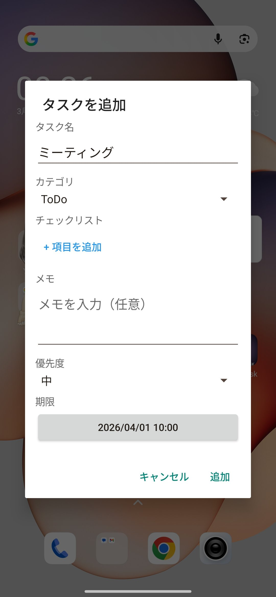
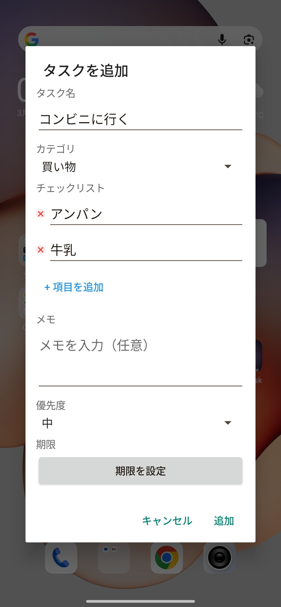
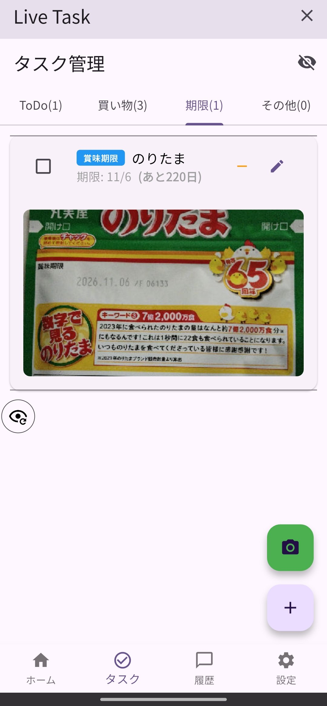
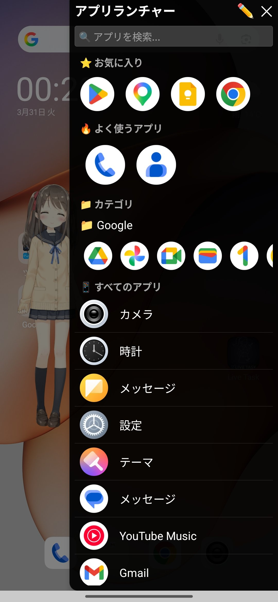

どのアプリを使っていても画面上に常駐するLive2DキャラクターがAIアシスタントとして機能するAndroidアプリ。タップして話しかければLLMが応答し、タスク管理やアプリ起動も自然な会話で操作できる。






オーバーレイ実装はflutter_overlay_windowパッケージを使わず、Kotlinで完全独自実装した（Live2DOverlayService.kt）。TYPE_APPLICATION_OVERLAY権限で全画面透過Windowを生成し、キャラクター以外の領域はタッチイベントをスルーすることで下のアプリを邪魔しない設計にした。
Live2DはKotlinオーバーレイサービス内のWebViewでPIXI.js + pixi-live2d-displayを使って描画。WebView ↔ Flutterメインアプリ間をJavaScriptチャネルで繋ぎ、アニメーション切り替えや表情変化のトリガーをFlutter側から制御している。待機中はアニメーション更新間隔を伸ばしてバッテリー消費を最小化。表示キャラクターはLive2D公式サンプルモデルを使用している。
Claude APIとGemini APIをプラグイン式に切り替え可能な設計にし、APIキーはflutter_secure_storageで端末内に暗号化保存。タスク・チャット履歴はHiveでオフライン保存するため、LLM会話以外の機能はネット不要で動作する。